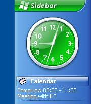
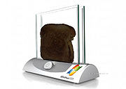
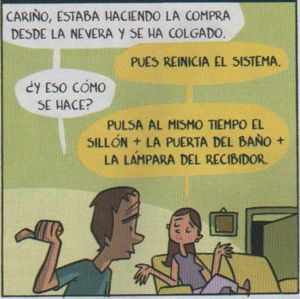

Hasefroch Vista
 De: La Frikipedia, la enciclopedia extremadamente seria.
De: La Frikipedia, la enciclopedia extremadamente seria.
| De la serie Sistemas Operativos:
|
Hasefroch AstalaVista
|
|
|
| Nombre
|
Hasefroch AstalaVista
|
| Desarrollador
|
Hasecorp
|
| Licencia
|
Mas Cara que la puta que los parió
|
| Núcleo
|
Acaso esa cosa tiene nucleo?
|
| Última versión
|
Muchas, las cuales, la versión echa para Bill Gates funciona como Dios Manda
|
| Estado actual
|
Intento de Service Pack 1, el cual hace mas lento tu sistema inoperativo (si esque puede llamarse asi)
|
| Número de cuelgues/min.
|
999.999.999.999.999.999.999.999
|
| Puertas abiertas a los virus
|
Todos los habidos y por haber
|
| ¿Que tipo de usuarios pueden usarlo?
|
Cualquiera que pueda usarlo (Practicamente nadie miserable)
|

Factura Puertas celebrando la salida de Vista.
 Parece
Dios, pero en realidad es San Reloj.
 Es mediocre en todo sentido
Videojuego inventado por Hasecorp, exclusivo para PeCes y con la característica de que no necesita un sistema operativo instalado. Éste es el SO responsable de destapar la pobreza extrema mundial.
También se cree que Hasecorp, han modificado el Hasefroch XD y lo ha retocado con el paint. Luego lo han puesto a la venta por más o menos medio millón de Dolares. No recomendamos ninguna version, (a excepcion de la version Pistola Garras) todas son bien putas caras e inestables mejor cambiese de Sistema Operativo.
Hasefroch Bosta hace más divertida tu inexperiencia con un ordenador porque:
- Trae muchas infuncionalidades y jueguitos, por ejemplo, el tan no-galardoneado "Imagina ser Avión de New York" y el "Imagina ser Mama borracha"
- Te va sumando puntos a cada ventana que abres y luego consigues cerrar (que es casi nunca).
- Las ventanas son transparentes y emborronan lo que tienen detrás( pirateandose esto de otro S.O.)
- Cada que instalas un programa te pregunta "¿Está seguro que desea ejecutar el instalador?" 300 veces hasta que pierdes la paciencia.
- Necesita aceleración 10D y un joystick de 20 ejes.
- Incluye el campo "search" tan aplaudido en Mac OS X, sólo que mal copiado pero igual de útil para buscar el porno por Actriz.
- Te aparecen ventanitas de actualización cada día.
- Está formado por la incompatibilidad del viejo arcade linux y la inestabilidad del juego de las ventanitas xp
- Incluye un PRECIOSO y ENORME RELOJ que puede colocarse en un ENORME, PRECIOSO e INÚTIL DOCK (ésta es sin duda la "prestación" más esperada del programa).
- Te habla de forma abstracta, tal como le hablarías tú a él. Es decir, nunca te dirá "aquí hay un archivo llamado tal", sino: "hay algo en algún sitio que podría contener algo parecido a tal cosa". Esto sin duda añadirá muchas horas de diversión al realizar una pequeña tarea.
- Cada vez que intentas cambiar la hora te pide confirmación una, dos y hasta tres veces, para luego decirte qué no puede hacerlo por razones de seguridad.
- Asigna una puntuación a tu equipo, y los programas te escupen en la cara si este no da la talla mínima. En un futuro se lanzará un lanzador de gargajo USB compatible con el medidor de tallas.
- La Blue Screen of Death será reemplazada por la Red Screen of Death diseñada para provocar desprendimientos de retina y otros daños oculares.
- Es más lento al ejecutar otros videojuegos. Así te será más fácil pasártelos. Los que funcionen, claro.
- Incluye el Reversi como huevo de pascua, con la novedad de que las fichas blancas tienen el careto de Steve Ballmer y las negras el de Bill Gates.
- El manual de instrucciones se ha reducido a un folleto que explica por qué Hasefroch Bosta es tan genial y debería recomendarlo a todo el mundo, y luego la frase: "Consulte a su pringao más cercano".
- Múltiples papeleras de reciclaje para evitar el cambio climático: Audio contenedor verde Imagen c. azul, Video c. rosa, Software c. amarillo, Software libre c.negro, documentos c.cristal-silverwhite, otros unidad C.
- A la segunda hora que uses esta cosa, te da influenza , convulciones extremas, cancer, y hasta quedar en coma por 1 larga decada.
- también incluirá una CAJA NEGRA como la de los aviones con la que te espiará todo!!!!!!!!!!!!! :O
- Dados los requerimientos de espacio, en la caja se incluye un datacenter holográfico de 403.14159 PetaBytes (no canjeables por droga), con capacidad suficiente para crear un disco de arranque de emergencias (sólo texto). Como deferencia a los usuarios, la versión final incluirá el reloj en dicho disco de serie.
Sin duda, el famoso Reloj convertirá a Hasefroch Bosta (antes llamado CuernosLargos) en el mejor programa de ordenador de la historia. Tiembla, Google. Tiembla, Jobs.
Requerimientos Mínimos
- Procesador Intel Extreme-3 QXTN20300 de 32007658760000000 Nucleos 390097665658.0 ghz cada nucleo(requiere que vivas en el espacio para no crear un agujero negro)
- Tarjeta de video PCI express de 32 x 5.0 de 500000000Tb (tambien corriendo el riesgo de que te asesine)
- Memoria RAM de 100Tb DDR10
- Disco Duro SATA VIII de 24.000 rps (Revoluciones Por Segundo) o DataCenter de 10000000000000000000000000000000000000 Terabytes minimo (ocupando casi el 80% el sistema inoperativo)
- Tarjeta de sonido 12.1 (para poder reproducir los sonidos de Sega Genesis que vienen con el sistema inoperativo).
- 10 Terabytes de disco duro
- extrema paciencia
- experiencia en programación y pelado de naranjas
- camara criogenica para estar vivo cuando inicie el sistema inopeativo
Una supercomputadora de la NASA es suficientemente potente para mostrar la pantalla de inicio
Significado de Hasefroch Vista
Por otro lado, Hasefroch Bosta es también reconocido con estos significados:
Hasefroch Vista (Bosta):
- V-Virus.
- I-Intrusos.
- S-Spyware.
- T-Troyanos.
- A-Adware.
Es muy importante tener este significado en cuenta si vas a comprar Hasefroch Bosta.
Nota: Hasefroch Bosta es también el predecesor del Hasefroch Olfato, del Hasefroch Pedo y del Hasefroch OlfatoMasPedoIgualAHostiaContraElSuelo.
Versiones
De Hasefroch Vista hay, aproximadamente y a ojo, unas 254.821, todas ellas son versiones definitivas plenamente operativas para que no puedas usar tu computadora. Aún así destacaremos las 6 o 7 más importantes:
- Hasefroch Vista Picha Floja: Está edición está indicada para el usuario incapaz de hacer otra cosa con el PC que no sea ver páginas de bucaque de monjas negras recien comidas. No se recomienda su uso para juegos profesionales como Tetris.
- Hasefroch Vista Pezón Duro: Está edición es para más salvajes. Se pone en el PC y es la leche, por que es como la otra, pero se ve todo así como si fuera baho y las ventanas hacen efecto baraja de la familia esquimal. De ahí su nombre, por el hielo que usa en las ventanas para hacer el efecto baho y transparencias como las que llevaba Loreto Valverde en Telecinco.
- Hasefroch Vista Bush e Inés: Fabulosa edición profesional para fruterías, tiendas de artículos importados de la China u otros negocios de gran índole. Se recomienda su uso no más de 8 horas al día, ya que puede producir cáncer de hígado y berrugas en las uñas y los dientes.
- Hasefroch Vista Lepra y Sida: Esta edición es más para el público que requiere de un Hasefroch de grandes prestaciones, como reproductor de vidreos que da vueltas y ventanas que te digan 'sí' o 'no' al abrirse y que la disquetera de 5,25" pulgadas que tienes en tu ordeñador eche billetes de 500 lerus.
- Hasefroch Vista Asqueroso: Es como todos los anteriores, pero limitado a 2 ventanas, dos clicks al día y además te tose encima y te echa el humo cuando fuma.
- Hasefroch Vista Miope y friki: Es una mezcla entre el Picha Floja y el Asqueroso, pero que además te escupe cáscaras de pipa en el teclado y dice cosas malas de tu madre y de tu colección de parches de Star Trek.
- Hasefroch Vista F1: Es la version que usaba el monoplaza de Lewis Hamilton, y que se reinicio en el Gran premio de Brasil de Fórmula 1 2007 despues de que presionara el botón de control de velocidad.
Me he comprado un portátil nuevo ¿Qué puedo hacer?
Sabemos que Hasecorp está perdiendo importantes sumas de dinero para conseguir que Hasefroch Bosta llegue a todos los usuarios posibles a base de pagar mogollones de leros a los fabricantes de PC, para que ofrezcan la modalidad "Hasefroch Bosta por webos". Esto no es más combatir la gran cagada que cometieron al crear "Hasefroch xD" (sistema operativo en el que, hasta el más tonto, puede instalar software pirata).
Como usuario insensato que eres, has adquirido un portátil con la modalidad de "Hasefroch Bosta por webos" y ahora tienes un portátil que sólo puedes usar para ver pasar el tiempo en su enorme reloj. No te preocupes, existe una forma sencilla de cambiar las funciones necesarias para que tu Hasefroch Bosta, se comporte como Hasefroch xD.

Este es el fondo de pantalla del Windows Bosta
Paso 1
Para el paso número dos, será necesario usar la herramienta ejecutar. Pero... ¿dónde coño lo han metido? No te vuelvas loco buscándolo. Pulsa botón derecho sobre la barra de tareas y marca propiedades. En la pestaña menú de inicio, selecciona la vista clásica. Ahora ya tienes tu querido "ejecutar" en el menú de inicio.
Paso 2
Escribe "regedit" en ejecutar y dale al botón ese de la flechita que sale de arriba y luego da un giro de perpendicularº. Ahora en el menú de regedit selecciona HEY_LOCAL_MACHINE (los más machos del garito) y ahí ve a la pestaña SOFTWARE con botón derecho y el selecciona eliminar. Si todo ha ido bien, no podrás ejecutar el tercer paso.
Paso 3
 Hasefroch ya investiga como aplicar su "know-how" en el futuro a todo tipo de dispositivos
Eliminia la carpeta C:\Windows. Ahora apaga el equipo como puedas. Tal vez pulsando el botón de apagar durante un largo periodo de tiempo de unas 2 horas. También puedes quitar la batería. Si aún quitando la batería no se apaga, lo mismo convendría desconectar el cable de corriente.
Paso 4
Pídele a alguien que te descargue del Emule un versión "Hasefroch xD Trabajador". Y no vengas diciendo que eso lo podrías haber hecho antes de ejecutar los tres primeros pasos. ¡Ni de coña! habrías podido instalar el emule en "Hasefroch Bosta" y menos aun conectarte a Internet para descargarlo. Tampoco interpretes esto como una acción de pirateo. Tú ya has pagado por un sistema mucho más nuevo y mucho mejor y mucho más caro, que nunca podrás usar. El uso que te corresponde por derecho es Hasefroch xD, además de que su código de licencia debe servir para xD, aunque billy gay no lo quiera, los comunistas linuxeros presionaron a hasefroch para que esto fuera así.
Paso 5
Instala tu viejo pero querido Hasefroch xD y recupera el control de tu vida. Porque ya se sabe que... más vale lo muy muy muy muy muy muy muy muy muy malo conocido que lo (muy muy muy muy muy muy muy muy muy muy)^Infinito malo por conocer.
Misterios de Hasefroch Vista y los ordeñadores portátiles
Uno de los misterios de Hasefroch Vista es que no se deja desinstalar de muchos portátiles, haciendo desesperar al geek de turno que se ha comprado su portátil de marca Choni, Hazer o Tochiva. Esto es debido a que el hardware está inicialmente preparado para que el CD pirata que tienes de Hasefroch XD no reconozca las entrañas del cacharro que te has comprado y te des con dos piedras en los reales.
¿Sabías que...
- ... Para poder usarlo tenías que actualizar tu computadora? (ese era el súper secreto)
- ... Casualmente el mundo subdesarrollado fue el que más
lloró se quejó contra éste magnifico SO?
Enlaces externos
Autor(es):
- Er Makina
- DonkeyG5
- M)(ke
- Mu
- Hari Seldon
- Alexan
- Ak665
- ZiReX
- EmuAGR
- Doctor grijander
Frikipedia 2005-2016, Licencia
GFDL 1.2 - Extraído por FrikiLeaks